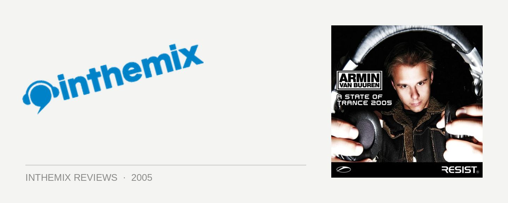

Various Artists - Armin Van Buuren: A State of Trance 2005
(Velocity/Shock)
While the liner notes for A State of Trance 2005 are the typical public relations filler we’ve come to expect from such compilations, there’s a valid point in there somewhere. It speaks of trance growing beyond its awkward years, shedding the ‘cheesy’ tag and maturing to become something it’s no longer an embarrassment to count yourself a fan of. Amongst all this, Armin Van Buuren has gone from strength to strength in his status as a superstar DJ. There’s no doubt A State of Trance 2005 will be observed closely for an insight into the current state of health the genre is enjoying, and fortunately, the doctor’s prognosis is good.
If it’s even possible for Armin to top his recent efforts over the last 12 months, then he’s managed it with A State of Trance 2005. Something special of note is that it’s Armin’s first release using Ableton Live, and it really comes across in the deepness of the mix. It’s become a cliché to herald a compilation’s mixing as so smooth you can barely notice the transition between tracks, but in this case it’s more valid than ever before. Allowing every last aspect of the mix to be tweaked to the extreme, a hell of a lot more can be done with Ableton Live than a mere two decks and a copy of ProTools, that’s for sure.
The first CD bears the subtitle Light, and shoots straight into a musical zone that manages to both keep the trance faithful happy and make a big leap forward. It’s a world of breathless female vocals, deep progressive rhythms and synths so soft and lush that you can almost feel their tender touch across your skin. There is some real vintage vocal trance on offer here, yet several tracks in the female vocals are left behind and it progresses into an even higher state of dreamy, pounding euphoria.
Armin’s new single Shivers makes an appearance, and he’s really outdone himself this time. Featuring a long, deep buildup that pulses hypnotically before peaking into a vocal-laden chorus, it’s classic to the extreme but no less exhilarating for it. Armin throws away the restrictive shackles of the genre to push a sound that soars triumphantly, but is simultaneously imbued with layer upon layer of beautifully textured electronic sound, even when he’s belting out a huge, hands-in-the-air anthem. It also shows Armin well and truly knows how to build a trance set, gently pulling the energy levels of the mix up and then down again, ensuring a superb sense of flow. Euphoric trance just doesn’t get any better than Light.
Heading over to the Dark side of things, the second CD signals something of a new direction for Armin. He’s jumping on the tech-trance train here, occupied by the likes of M.I.K.E. and Marco V, and it’s likely to alienate some of the Armin massive. His talents extend well beyond any petty genre distinctions however, so it goes without saying that it’s of top-notch quality, new direction or no new direction. Featuring generous lashings of tech and progressive, the rhythms are more esoteric and the textures more intricate, with Armin holding back on the euphoria to create a vibe that’s just a little bit deeper. Fans needn’t worry too much though, as it doesn’t drift too far from the status quo. It’s still sonically lush and emotionally charged; at the end of the day, it’s still trance.
If any doubts remain over Armin’s status as one of the world’s top trance jocks, they’ll be effortlessly dismissed with A State of Trance 2005. With so many mix albums offering little more than a passing enjoyment, it’s a real breath of fresh air to be totally inspired by a release that’s passionate, moving and with more substance than even die-hard fans have come to expect. Whilst the first CD honourably serves the trance tradition, the second takes Armin’s sound in enough of a new direction to leave the listener genuinely excited. A State of Trance 2005 features some of the strongest trance you’ve ever heard and are ever likely to hear, and a recommendation can’t come any more resolute than that.